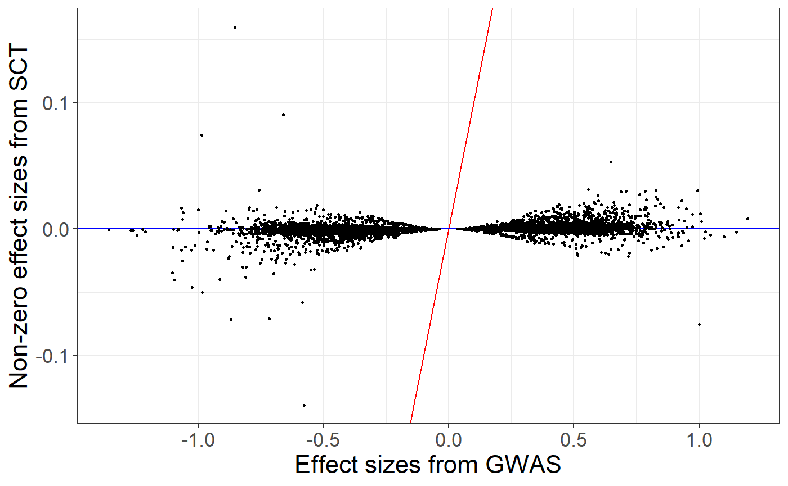
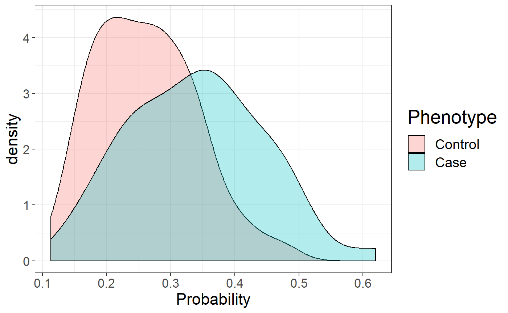

vignettes/SCT.Rmd
SCT.RmdIn this document, we show how to compute polygenic risk scores using Stacked Clumping and Thresholding (SCT).
You can download data and unzip files in R. We store those files in a directory called "tmp-data" here.
You can see there how we generated these data from the 1000 Genomes project. Note that these data are for educational purposes only, not for use as a reference panel.
First, you need to read genotype data from the PLINK files (or BGEN files) as well as the text file containing summary statistics.
## Loading required package: bigstatsr# Read from bed/bim/fam, it generates .bk and .rds files. snp_readBed("tmp-data/public-data.bed")
## [1] "C:\\Users\\au639593\\Desktop\\bigsnpr\\tmp-data\\public-data.rds"# Attach the "bigSNP" object in R session obj.bigSNP <- snp_attach("tmp-data/public-data.rds") # See how the file looks like str(obj.bigSNP, max.level = 2, strict.width = "cut")
## List of 3
## $ genotypes:Reference class 'FBM.code256' [package "bigstatsr"] with 15 ..
## ..and 26 methods, of which 12 are possibly relevant:
## .. add_columns, as.FBM, bm, bm.desc, check_dimensions,
## .. check_write_permissions, copy#envRefClass, initialize,
## .. initialize#FBM, save, show#envRefClass, show#FBM
## $ fam :'data.frame': 559 obs. of 6 variables:
## ..$ family.ID : chr [1:559] "EUR_GBR" "EUR_GBR" "EUR_GBR" "EUR_GBR" ...
## ..$ sample.ID : chr [1:559] "HG00096" "HG00097" "HG00099" "HG00100" ...
## ..$ paternal.ID: int [1:559] 0 0 0 0 0 0 0 0 0 0 ...
## ..$ maternal.ID: int [1:559] 0 0 0 0 0 0 0 0 0 0 ...
## ..$ sex : int [1:559] 1 2 2 2 1 2 1 2 2 1 ...
## ..$ affection : int [1:559] 1 2 1 1 1 1 2 1 2 1 ...
## $ map :'data.frame': 130816 obs. of 6 variables:
## ..$ chromosome : int [1:130816] 2 2 2 2 2 2 2 2 2 2 ...
## ..$ marker.ID : chr [1:130816] "rs13400442" "rs7594567" "rs7597758" "..
## ..$ genetic.dist: int [1:130816] 0 0 0 0 0 0 0 0 0 0 ...
## ..$ physical.pos: int [1:130816] 18506 21833 22398 28228 32003 32005 36..
## ..$ allele1 : chr [1:130816] "C" "G" "T" "A" ...
## ..$ allele2 : chr [1:130816] "T" "C" "C" "G" ...
## - attr(*, "class")= chr "bigSNP"# Get aliases for useful slots G <- obj.bigSNP$genotypes CHR <- obj.bigSNP$map$chromosome POS <- obj.bigSNP$map$physical.pos y <- obj.bigSNP$fam$affection - 1 NCORES <- nb_cores() # Check some counts for the 10 first variants big_counts(G, ind.col = 1:10)
## [,1] [,2] [,3] [,4] [,5] [,6] [,7] [,8] [,9] [,10]
## 0 504 468 421 483 476 420 380 383 478 389
## 1 48 69 107 66 73 124 136 135 70 133
## 2 7 22 31 10 10 15 43 41 11 37
## <NA> 0 0 0 0 0 0 0 0 0 0# Read external summary statistics sumstats <- bigreadr::fread2("tmp-data/public-data-sumstats.txt", select = c(1:6, 10)) str(sumstats)
## 'data.frame': 130816 obs. of 7 variables:
## $ chromosome : int 2 2 2 2 2 2 2 2 2 2 ...
## $ marker.ID : chr "rs13400442" "rs7594567" "rs7597758" "rs13383216" ...
## $ physical.pos: int 18506 21833 22398 28228 32003 32005 36787 55237 56916 61687 ...
## $ allele1 : chr "C" "G" "T" "A" ...
## $ allele2 : chr "T" "C" "C" "G" ...
## $ beta : num -0.073 0.0439 -0.3325 -0.5445 -0.4881 ...
## $ p : num 0.7925 0.8593 0.0846 0.028 0.0439 ...We split genotype data using part of the data to learn parameters of stacking and another part of the data to evaluate statistical properties of polygenic risk score such as AUC. Here we consider that there are 400 individuals in the training set.
To match variants contained in genotype data and summary statistics, the variables "chr" (chromosome number), "pos" (genetic position), "a0" (reference allele) and "a1" (derived allele) should be available in the summary statistics and in the genotype data. These 4 variables are used to match variants between the two data frames.
names(sumstats) <- c("chr", "rsid", "pos", "a0", "a1", "beta", "p") map <- obj.bigSNP$map[,-(2:3)] names(map) <- c("chr", "pos", "a0", "a1") info_snp <- snp_match(sumstats, map)
## 130,816 variants to be matched.## 18,932 ambiguous SNPs have been removed.## Some duplicates were removed.## 111,866 variants have been matched; 0 were flipped and 0 were reversed.If no or few variants are actually flipped, you might want to disable the strand flipping option. Here, these are simulated data so all variants use the same strand and the same reference.
info_snp <- snp_match(sumstats, map, strand_flip = FALSE)
## 130,816 variants to be matched.## Some duplicates were removed.## 130,792 variants have been matched; 0 were flipped and 0 were reversed.First, the function snp_grid_clumping() computes sets of variants resulting from the clumping procedure that is applied repeatedly with different values of hyper-parameters (threshold of correlation for clumping, window size, and possibly imputation accuracy threshold). By default, the function uses 28 (7 thresholds of correlation x 4 window sizes) different sets of hyper-parameters for generating sets of variants resulting from clumping.
# The clumping step might take some time to complete all_keep <- snp_grid_clumping(G, CHR, POS, ind.row = ind.train, lpS = lpval, exclude = which(is.na(lpval)), ncores = NCORES) attr(all_keep, "grid")
## size thr.r2 grp.num thr.imp
## 1 5000 0.01 1 1
## 2 10000 0.01 1 1
## 3 20000 0.01 1 1
## 4 50000 0.01 1 1
## 5 1000 0.05 1 1
## 6 2000 0.05 1 1
## 7 4000 0.05 1 1
## 8 10000 0.05 1 1
## 9 500 0.10 1 1
## 10 1000 0.10 1 1
## 11 2000 0.10 1 1
## 12 5000 0.10 1 1
## 13 250 0.20 1 1
## 14 500 0.20 1 1
## 15 1000 0.20 1 1
## 16 2500 0.20 1 1
## 17 100 0.50 1 1
## 18 200 0.50 1 1
## 19 400 0.50 1 1
## 20 1000 0.50 1 1
## 21 62 0.80 1 1
## 22 125 0.80 1 1
## 23 250 0.80 1 1
## 24 625 0.80 1 1
## 25 52 0.95 1 1
## 26 105 0.95 1 1
## 27 210 0.95 1 1
## 28 526 0.95 1 1Then, for each chromosome, for each set of variants resulting from clumping and for each p-value threshold, the function snp_grid_PRS() computes C+T scores.
multi_PRS <- snp_grid_PRS(G, all_keep, beta, lpval, ind.row = ind.train, backingfile = "tmp-data/public-data-scores", n_thr_lpS = 50, ncores = NCORES) dim(multi_PRS) ## 4200 C+T scores for 400 individuals
## [1] 400 4200A penalized regression is finally used to learn an optimal linear combination of C+T scores.
final_mod <- snp_grid_stacking(multi_PRS, y[ind.train], ncores = NCORES, K = 4) summary(final_mod$mod)
## # A tibble: 3 x 9
## alpha power_adaptive power_scale validation_loss intercept beta nb_var
## <dbl> <dbl> <dbl> <dbl> <dbl> <lis> <int>
## 1 0.0001 0 1 0.565 -1.05 <dbl~ 4028
## 2 0.01 0 1 0.567 -1.06 <dbl~ 808
## 3 1 0 1 0.569 -1.09 <dbl~ 136
## # ... with 2 more variables: message <list>, all_conv <lgl>Here, I use K = 4 folds because this example data is very small; the default is to use 10. For options for fitting penalized regressions, see this vignette.
From stacking C+T scores, we can derive a unique vector of weights and compare effects resulting from stacking to the initial regression coefficients provided as summary statistics.
new_beta <- final_mod$beta.G ind <- which(new_beta != 0)
## Warning: package 'ggplot2' was built under R version 3.6.3ggplot(data.frame(y = new_beta, x = beta)[ind, ]) + geom_abline(slope = 1, intercept = 0, color = "red") + geom_abline(slope = 0, intercept = 0, color = "blue") + geom_point(aes(x, y), size = 0.6) + theme_bigstatsr() + labs(x = "Effect sizes from GWAS", y = "Non-zero effect sizes from SCT")

We can use this vector of variant weights to compute polygenic risk scores on the test set and evaluate the Area Under the Curve (AUC).
pred <- final_mod$intercept + big_prodVec(G, new_beta[ind], ind.row = ind.test, ind.col = ind) AUCBoot(pred, y[ind.test])
## Mean 2.5% 97.5% Sd
## 0.6829444 0.5847917 0.7756834 0.0486900ggplot(data.frame( Phenotype = factor(y[ind.test], levels = 0:1, labels = c("Control", "Case")), Probability = 1 / (1 + exp(-pred)))) + theme_bigstatsr() + geom_density(aes(Probability, fill = Phenotype), alpha = 0.3)

Instead of stacking, an alternative is to choose the best C+T score based on the computed grid. This procedure is appealing when there are not enough individuals to learn the stacking weights.
## Warning: package 'dplyr' was built under R version 3.6.3grid2 <- attr(all_keep, "grid") %>% mutate(thr.lp = list(attr(multi_PRS, "grid.lpS.thr")), id = row_number()) %>% tidyr::unnest(cols = "thr.lp") s <- nrow(grid2) grid2$auc <- big_apply(multi_PRS, a.FUN = function(X, ind, s, y.train) { # Sum over all chromosomes, for the same C+T parameters single_PRS <- rowSums(X[, ind + s * (0:2)]) ## replace by 0:21 in real data bigstatsr::AUC(single_PRS, y.train) }, ind = 1:s, s = s, y.train = y[ind.train], a.combine = 'c', block.size = 1, ncores = NCORES)
## # A tibble: 10 x 7
## size thr.r2 grp.num thr.imp thr.lp id auc
## <int> <dbl> <int> <dbl> <dbl> <int> <dbl>
## 1 4000 0.05 1 1 1.63 7 0.651
## 2 10000 0.05 1 1 0.733 8 0.651
## 3 10000 0.05 1 1 1.63 8 0.651
## 4 10000 0.05 1 1 0.455 8 0.650
## 5 5000 0.1 1 1 0.733 12 0.650
## 6 10000 0.05 1 1 0.492 8 0.650
## 7 10000 0.05 1 1 0.127 8 0.650
## 8 4000 0.05 1 1 1.01 7 0.650
## 9 10000 0.05 1 1 0.149 8 0.650
## 10 10000 0.05 1 1 0.533 8 0.650## [1] 1098AUCBoot( snp_PRS(G, beta[ind.keep], ind.test = ind.test, ind.keep = ind.keep, lpS.keep = lpval[ind.keep], thr.list = max_prs$thr.lp), y[ind.test] )
## Mean 2.5% 97.5% Sd
## 0.6779916 0.5814000 0.7691177 0.0477630For this example, the best C+T predictions provides an AUC of 67% whereas stacking, which should be preferred, provides an AUC of 68.5%.
Privé, Florian, et al. “Making the most of Clumping and Thresholding for polygenic scores.” Am J Hum Genet (2019).